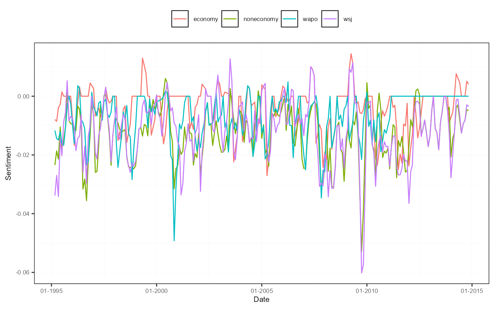

Plotting method that shows all sentiment measures from the provided sento_measures
object in one plot, or the average along one of the lexicons, features and time weighting dimensions.
# S3 method for class 'sento_measures'
plot(x, group = "all", ...)a sento_measures object created using sento_measures.
a value from c("lexicons", "features", "time", "all"). The first three choices display the average of
all measures from the same group, in a different color. The choice "all" displays every single sentiment measure
in a separate color, but this may look visually overwhelming very fast, and can be quite slow.
not used.
Returns a simple ggplot object, which can be added onto (or to alter its default elements) by using
the + operator (see example). By default, a legend is positioned at the top if there are at maximum twelve line
graphs plotted and group is different from "all".
# construct a sento_measures object to start with
corpus <- sento_corpus(corpusdf = sentometrics::usnews)
corpusSample <- quanteda::corpus_sample(corpus, size = 500)
l <- sento_lexicons(sentometrics::list_lexicons[c("LM_en")],
sentometrics::list_valence_shifters[["en"]])
ctr <- ctr_agg(howTime = c("equal_weight", "linear"), by = "month", lag = 3)
sm <- sento_measures(corpusSample, l, ctr)
# plot sentiment measures
plot(sm, "features")

if (FALSE) { # \dontrun{
# adjust appearance of plot
library("ggplot2")
p <- plot(sm)
p <- p +
scale_x_date(name = "year", date_labels = "%Y") +
scale_y_continuous(name = "newName")
p} # }